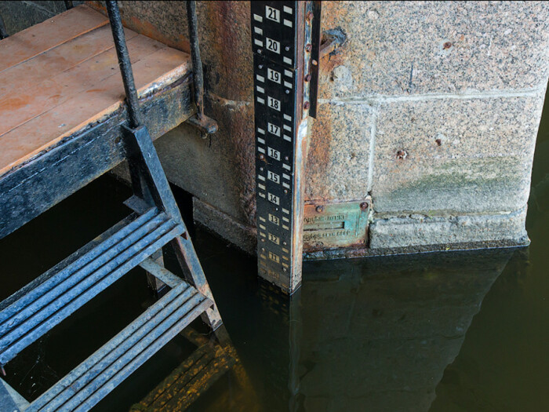
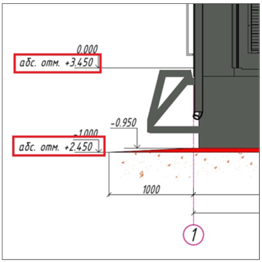
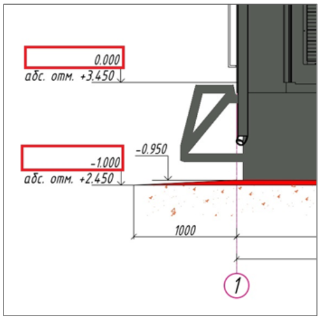
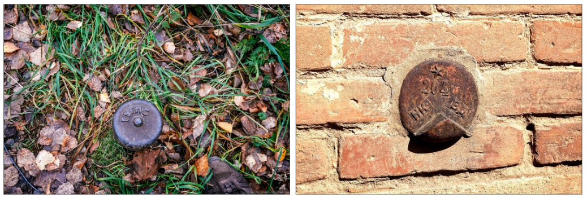
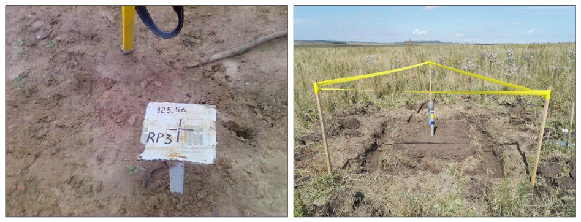
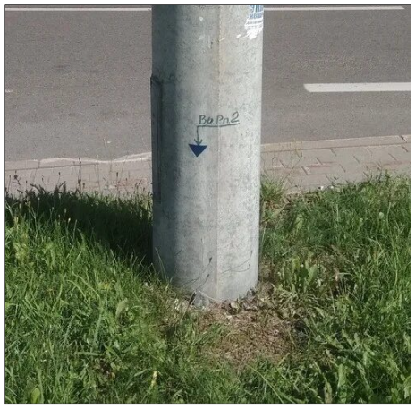
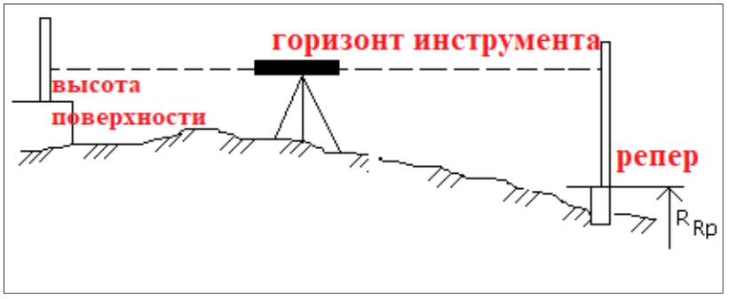

Переносим высотные отметки от репера в несколько шагов
На прошлом уроке вы научились определять отсчет по рейке. Теперь пора разобраться с расчетом высот. На этом уроке будем переносить высотные отметки на самый верх сооружений, определять разницу абсолютных и относительных отметок, а также рассчитывать высоту от репера.

Самый простой способ переноса известной высоты с одного места на другое – это работа в условных высотах. Условные высоты – это высота, которая не привязана к каким-либо известным отметкам. Более подробно смотрите в видео.
Существует еще Абсолютная высота. Это точка на поверхности земли, которая отсчитывается от уровня моря или океана. В России принято отсчитывать высоту от уровня Балтийского моря, отметка «0.000».

Все отметки на картах и планах России указывают именно от этой высоты. Если вы посмотрите на любой строительный чертеж, то увидите, что на них также обязательно присутствует Абсолютная отметка.

А еще на чертежах указываются относительные отметки. Обычно за относительный «0.000» принимают уровень чистого пола первого этажа «Ур.чп». И уже в относительных отметках ведется строительство здания или сооружения.

Как закрепляют высотные отметки
Реперы – это знаки с известной абсолютной высотой. Они бывают:
- вековые (стабильные) – используются для долгосрочного наблюдения за рельефом и установления государственной системы координат.

- фундаментальные – устанавливаются для ведения крупномасштабных объектов. При начале строительства Заказчик передаст ГРО – геодезическую разбивочную основу – закрепленные знаки с известными координатами и абсолютными высотными значениями.

- временные – применяются на локальных участках, когда отметку необходимо указать на короткий промежуток времени. Их указывают на стенах, столбах, опорах или просто на бордюре (на любой поверхности, которая не двигается).

Определяем высоту от репера

Теперь посмотрите видео. В нем я расскажу, как проводить съемку в абсолютных высотах.
Задача: определить высоту поверхности (для проверки уровня конструкции или переноса временного репера).
Следуем алгоритму:
- Устанавливаем нивелир в рабочее положение.
- Устанавливаем рейку на репер, раскладываем рейку на такую длину, чтобы ее было видно, когда вы смотрите в прибор.
- Берем отсчет по рейке и записываем его. Рассчитываем горизонт инструмента (ГИ) по формуле: ГИ = Hрепера + отсчет.
Пример: Hрепера = 31,550 м, отсчет по рейке 1489. ГИ = 31,550+1,489 = 33,039 м - Ставим рейку на проверяемую поверхность и берем отсчет по рейке. Вычисляем Hповерхности
Пример: отсчет по рейке на проверяемой поверхности 998, значит его высота будет равна: Hповерхности = ГИ – отсчет на поверхности, Hповерхности = 33.039 – 0.998 = 32.041м.
Выносим на здание временный репер
Наличие реперов на здании в фиксированной целой высоте +1.000м, +2.000 и т.п. упрощает ход строительства.
Задача: вынести на здание временный репер в относительной высоте +1,000. Наличие реперов на здании в фиксированной целой высоте +1.000м, +2.000 и т.п. упрощает ход строительства.
В строительном чертеже есть пояснение, что относительная отметка +0,000 равна абсолютной отметке 13.458 м, значит относительная отметка +1,000 будет равна 13,458+1,000 = 14,458м – ее мы будем искать.
Алгоритм работы:
- Устанавливаем нивелир в рабочее положение.
- Устанавливаем рейку на репер, раскладываем рейку на такую длину, чтобы её было видно, когда вы смотрите в прибор.
- Берем отсчет по рейке и записываем его. Рассчитываем горизонт инструмента (ГИ) по формуле: ГИ = Hрепера + отсчет.
Пример: Hрепера = 12.455 м, отсчет по рейке 1377. ГИ = 12,455+1,377 = 13,832 м - Рассчитываем отсчет по рейке, который мы должны увидеть для того, чтобы найти высоту: отсчет = ГИ – H(+1.000) = 13.832 м – 14.458 м = -0,626.
Интересно: не переживайте, если расчет получился со знаком «-», это вполне нормально. - Прислоняем рейку к поверхности, на которой будем отмечать временный репер, только не привычным для нас способом, а переворачиваем рейку «пяткой» вверх (вверх ногами) и ловим ее отсчет в окуляре нивелира.
- Когда поймали отсчет 626 на рейке, плотно прижимаем рейку к стене и рисуем линию по пятке рейки. Убираем рейку и дорисовываем треугольник вершиной вниз. Пишем рядом с получившейся фигурой +1.000. Временный репер готов к использованию.
Если бы при расчете у нас получилось положительное значение, то рейку прислоняли к стене обычным способом – «пяткой» вниз, и когда поймали необходимый отсчет, линию рисовали также по «пятке» рейки.
Переносим репер на соседний этаж
Мы уже говорили о том, что наличие временных реперов при строительстве облегчает работу, и когда поднят второй и последующие этажи, репер нужно выносить на них. Это можно сделать множеством способов. Например, рулеткой или тахеометром. Мы рассмотрим самый точный и классический способ.
Алгоритм работы:
- Устанавливаем нивелир в рабочее положение.
- Устанавливаем рейку на репер (Rp), раскладываем рейку на такую длину, чтобы ее было видно, когда вы смотрите в прибор.
- Берем отсчет по рейке и записываем его.
- Переставляем рейку на противоположную стену и берем отсчет2, записываем данные.
- Переносим нивелир на Установку 2. Берем отсчеты 3 и 4, записываем данные.
- Переставляем нивелир на Установку 3, берем отсчеты 5 и 6, записываем данные.
- При установке рейки на отсчет 6 необходимо нарисовать временную линию, чтобы не потерять контрольную высоту.
- Рассчитаем результат: Rp + отсчет1 –отсчет2 + отсчет3 – отсчет4 + отсчет 5 – отсчет6 = 1,000 + 1,115 – 0,1 + 2,222 – 0,17 + 1,458 – 0,14 = 5,585м.
- Рассчитываем временный репер в целой высоте +6.000 по примеру выноса репера на здание.
Когда вы будете переставлять нивелир на место «Установки2», попросите человека, который держит рейку, остаться и продолжить ее держать. Если рисовать линию или переставлять рейку даже на 10 см в сторону – это может исказить результат.
И еще одно уточнение: когда вам необходимо дать высоту ниже указанной, отсчет по рейке будет увеличиваться, если выше указанной – отсчет по рейке будет уменьшаться.
После каждой работы с нивелиром его необходимо приводить в исходное положение и правильно убирать в кейс, чтобы сохранить долговечность такого хрупкого, но незаменимого оборудования. На видео ниже я рассказала основные правила подготовки нивелира к перемещению.
Теперь перейдем непосредственно к перемещению нивелира в кейс.
Вы отлично потрудились! На этом уроки по работе с геодезическим оборудованием закончились, и мы можем переходить к чтению исполнительных схем.